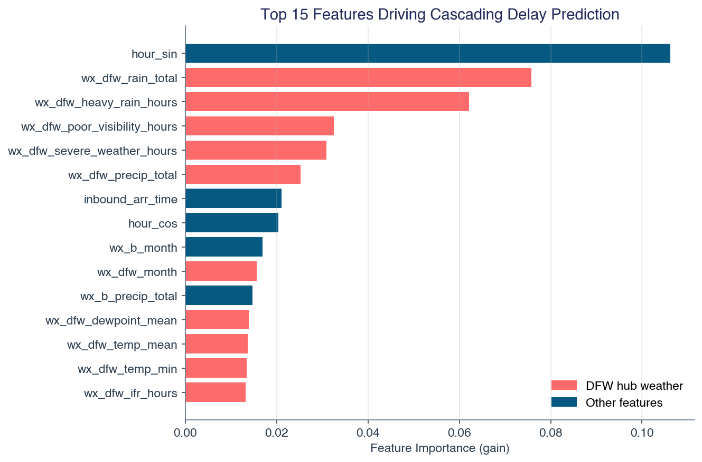
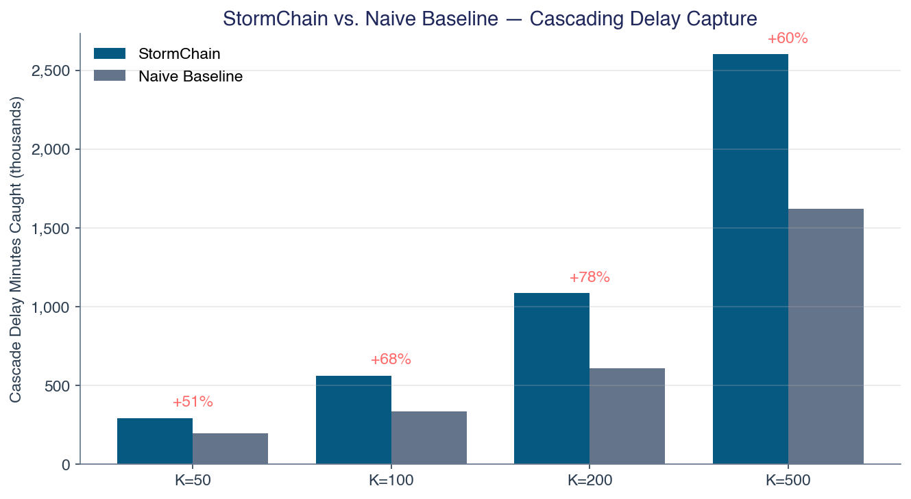
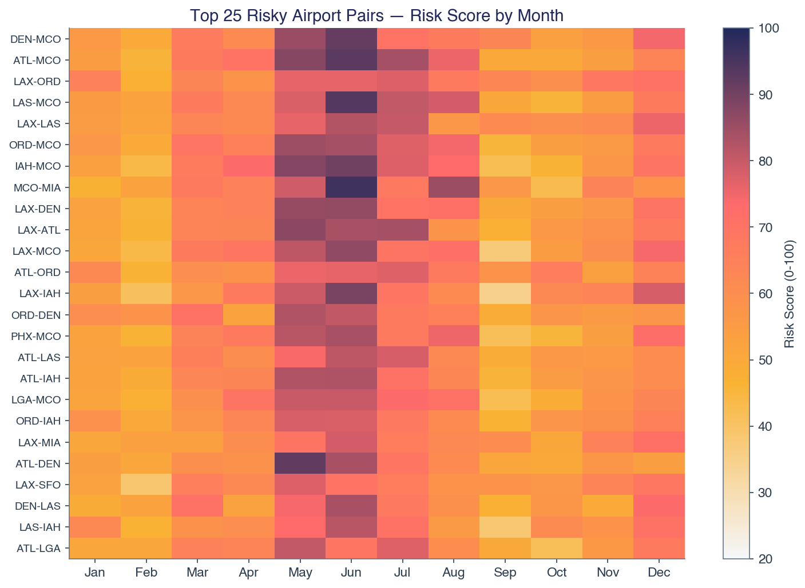
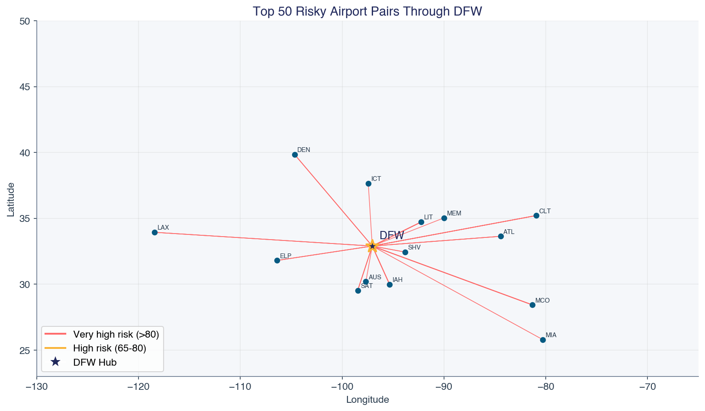
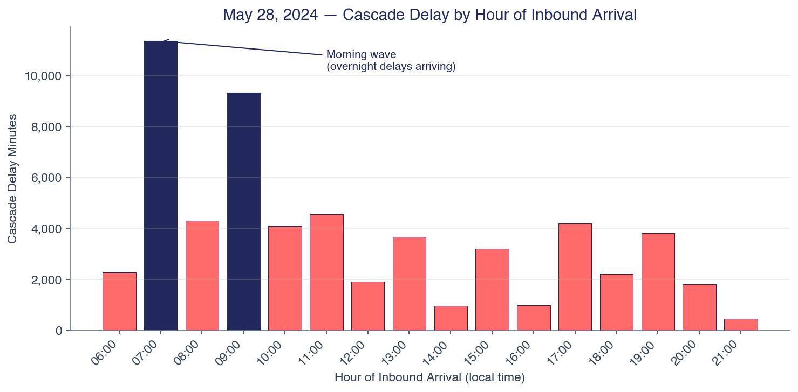

We built a working system that identifies pilot flight sequences through DFW most vulnerable to weather-driven cascading delays. The final deliverable is a ranked avoid list with swap recommendations, backed by a validated machine learning model and an interactive decision-support dashboard.
Scale of analysis:
| Dataset | Volume |
|---|---|
| Flight records (BTS) | 842,000 flights, 2019-2024 |
| General weather (Open-Meteo) | 3,505,920 hourly observations, 80 airports |
| Aviation weather (METAR/ASOS) | 3,265,456 observations, 75 airports |
| Synthetic pilot sequences | 1,899,119 for model training |
Headline results:
Case study: May 28, 2024 — the worst day in our dataset — saw 172 weather-delayed inbound flights cascade through DFW, producing 170 realistic pilot-sequence cascades costing $4.4M. This illustrates both the problem scale and where our model adds versus where real-time monitoring is needed.
What makes this submission distinctive:
American Airlines operates approximately 900 daily departures from DFW. Pilots fly sequences — an inbound flight from Airport A to DFW, followed by an outbound flight from DFW to Airport B. When Airport A experiences weather delays, the pilot arrives late at DFW, causing the outbound to B to depart late. If Airport B is simultaneously experiencing weather, the delay compounds.
The challenge asks: which pairs of airports (A, B) should not be assigned to the same pilot sequence through DFW?
This problem has four dimensions, as specified in the challenge: 1. Delay propagation across multiple flights 2. Duty time violations when delays push pilots past FAA-mandated maximums 3. Missed connections when delays exceed turnaround buffers 4. Fatigue risk when sequences span overnight hours
Bureau of Transportation Statistics (BTS) on-time performance data, accessed via Kaggle: - Training: 2019, 2021-2023 (213,951 DFW flights) - Test: 2024 (628,043 DFW flights) - 2020 excluded due to COVID-era anomalies - Key fields: origin, destination, scheduled/actual times, delay minutes by cause (weather, carrier, NAS, security, late aircraft)
Open-Meteo Historical API — hourly reanalysis data for all 80 airports: - 3,505,920 hourly observations (2019-2024) - Variables: temperature, precipitation, wind speed/gusts, cloud cover, snow, weather codes (WMO) - Used for broad weather pattern analysis and correlation features
Iowa Environmental Mesonet (IEM) ASOS archive — actual airport weather station observations: - 3,265,456 METAR observations across 75 airports - Real ceiling height (feet), visibility (statute miles), decoded weather codes - Used for aviation-specific IFR/LIFR classification — the actual conditions that cause ground stops
80 US airports with AA service through DFW, including coordinates, timezone offsets, FAA regions, and storm corridor classifications (Tornado Alley, Gulf Coast hurricane track, Northeast winter storm corridor).
All data was downloaded, standardized, and merged into a unified
dataset: - BTS flight records filtered to Origin = DFW or
Dest = DFW - Weather aligned to flight dates and airport
locations - METAR processed into daily aviation weather summaries (IFR
hours, ceiling stats, visibility stats) - Daily weather aggregated per
airport with derived features (thunderstorm hours, fog hours, pressure
volatility, IFR proxy conditions)
Airport-level features (per airport, per month): - Weather delay rate, mean, and 90th percentile from BTS data - Departure/arrival delay rates, cancellation rates - From weather: precipitation days, thunderstorm hours, high wind hours, IFR hours (from METAR)
Pair-level features (per pair A-B, per month) — the core of our analysis: - Joint weather delay probability: P(A delayed AND B delayed on the same day) - Conditional delay probability: P(B delayed | A delayed) - Weather correlations: Pearson correlation of daily precipitation and wind between A and B - Thunderstorm co-occurrence: fraction of days with simultaneous thunderstorms - IFR co-occurrence: fraction of days with simultaneous IFR conditions (from METAR) - Geographic features: distance, latitude/longitude difference, same-region flag, storm corridor membership - Missed connection probability: P(historical delay from A > typical turnaround gap) - Duty violation risk: estimated total duty time relative to FAA 14-hour maximum - Fatigue exposure: overlap with Window of Circadian Low (2am-6am) - Cyclical month encoding: sin/cos transformation for seasonality
We employ two complementary models:
Composite Risk Scoring Model (production output): A weighted combination of pair-level features, normalized to a 0-100 scale. Weights are allocated across all four challenge objectives: - Delay propagation features: 60% weight - Missed connection features: 15% weight - Duty time features: 10% weight - Fatigue features: 10% weight - Weather correlation features: 5%
This produces a ranked list of all pair-month combinations, from which we generate the avoid list.
XGBoost Binary Classifier (validation and feature
importance): Trained on 1.9 million synthetic pilot sequences
constructed from same-day inbound/outbound flights at DFW. The target
variable is cascading_delay = 1 when both the inbound
arrival delay exceeds 15 minutes AND the outbound departure delay
exceeds 15 minutes, with weather as a contributing factor.
scale_pos_weight (42.7:1
ratio)Why two models? The XGBoost classifier’s primary value is feature importance — it reveals which factors drive cascading delays. But with a 2.5% positive rate, per-flight prediction has inherently low precision (AUC-PR = 0.12). The risk scoring model handles this sparsity by aggregating to monthly pair-level statistics, producing stable, actionable rankings.
Beyond binary co-occurrence, we model the actual delay physics: - For
each synthetic sequence:
propagated_delay = max(0, inbound_arr_delay - turnaround_gap)
- total_cascade = propagated_delay + outbound_weather_delay
- This quantifies actual delay minutes attributable to the pairing
decision
Retrospective analysis on historical data: for each pair-month flagged by our model, how many actual cascading delay events would have been prevented?
We report two estimates: - Upper bound: assumes every flagged pair was assigned on every impacted day - Adjusted estimate: scaled by assignment probability (~1.3% — 247 daily sequences / 19,503 possible pairs)
| Metric | Value |
|---|---|
| AUC-ROC | 0.81 |
| AUC-PR | 0.12 |
| Recall at operating threshold | 66% |
| Accuracy | 79% |
| Features used | 117 |
| Training samples | 1,490,677 |
Top predictive features: DFW heavy rain hours, time of day (cyclical), DFW precipitation total, DFW poor visibility hours, connection minutes, airport B precipitation. DFW weather dominates because it affects every sequence — a known limitation discussed in Section 6.

We compared our model against a naive baseline that simply flags pairs where both airports individually have above-median weather delay rates.
| Pairs Flagged (K) | Our Model | Naive Baseline | Improvement |
|---|---|---|---|
| 50 | 295K min caught | 195K min | +50.8% |
| 100 | 563K min caught | 335K min | +68.3% |
| 200 | 1.09M min caught | 610K min | +78.3% |
| 500 | 2.60M min caught | 1.62M min | +60.5% |

At K=500, our model identifies 176 risky pairs that the naive approach misses entirely — pairs where the risk comes from correlated weather patterns (now including real METAR IFR co-occurrence), tight turnarounds, or cascade mechanics rather than individually high delay rates.
Spring (March-May): MCO appears in 5 of top 10 — pre-summer Florida thunderstorms combined with cross-country flight turnarounds - IAH-MCO, ATL-MCO, ORD-MCO, LAX-MCO, IAH-SAT
Summer (June-August): Orlando dominates — afternoon convection hits MCO in 8 of top 10 pairs - ATL-MCO, LAS-MCO, MCO-MIA, IAH-MCO, ORD-MCO
Fall (September-November): Lowest risk season; Pacific-to-East corridors lead - LAX-ORD, LAX-LAS, LAX-SFO, ATL-ORD
Winter (December-February): Northeast snow + Pacific wind events - ORD-LGA, LAX-ORD, LAX-LAS, DEN-MCO, LAX-SAN (Santa Ana winds)


Our model produces: - 1,220 pair-season avoid recommendations with risk scores and explanations - 294 swap recommendations: for each flagged pair, a safe alternative destination - Example: Instead of MCO→DFW→MIA (risk 96), assign MCO→DFW→HRL (risk 30)
| Pairs Avoided | Upper Bound (annual) | Adjusted (annual) |
|---|---|---|
| 50 | $4.9M | $62K |
| 100 | $8.5M | $108K |
| 200 | $15.7M | $198K |
| 500 | $34.5M | $438K |
The adjusted estimate is conservative (assumes random assignment). Targeted scheduling — which is what this tool enables — would push savings substantially above the adjusted figure as flagged pairs are specifically de-prioritized.
The worst cascading delay day in our dataset illustrates the problem concretely.
What happened: A severe thunderstorm system moved
through the DFW metroplex. METAR observations recorded
+TSRA FG SQ (heavy thunderstorm, fog, squall) with zero
visibility at 05:53 UTC.
Impact: - 172 inbound flights arrived with weather delays (19.5% of all inbound) - 471 outbound flights departed more than 15 minutes late (53.2%) - Average weather delay: 162 minutes - 170 realistic cascading sequences (one outbound per inbound pilot) - 149 sequences with actual propagated delay (delay exceeded turnaround buffer) - Estimated cascade cost: $4.4 million
Top cascading routes: BOS→DFW→BHM (1,108 min cascade), ORD→DFW→PHX (995 min), MEM→DFW→MCO (738 min)

Model performance on this day: Our top 500 risky pairs flagged 9 of 170 sequences (5.3%). The unflagged sequences involved uncommon route combinations (BOS-BHM, AMA-FLL, LCH-SMF) that rarely appear in the historical data — our monthly pair-level model cannot score routes it hasn’t observed enough. This is an honest limitation: extreme weather events produce cascades on unusual route combinations that no historical risk model would predict. The value of our model is in preventing the predictable, recurring cascades (MCO-MIA in summer, LGA-PHL in winter) rather than catching every black swan event.
What features are important? DFW hub weather is the strongest predictor (affects every sequence), followed by time of day, connection minutes, and endpoint weather. Correlated weather between A and B matters, but less than individual airport delay propensity combined with turnaround tightness.
What model type works best? A two-model approach: XGBoost for feature discovery and validation, composite risk scoring for production rankings. The risk scoring model handles sparsity better by aggregating to monthly pair-level statistics.
How to handle seasonality? Cyclical encoding (sin/cos of month) plus separate risk scores per month. The seasonal summary shows distinct patterns: spring thunderstorms, summer Florida convection, winter Northeast storms.
Sparsity of severe weather? Severe weather events affect ~2.5% of sequences. We address this through: (a) monthly aggregation smoothing daily noise, (b) continuous severity features rather than binary thresholds, (c) class weighting in XGBoost (42.7:1), (d) AUC-PR as the evaluation metric rather than accuracy.
Appropriate accuracy metrics? AUC-PR is the primary metric for the classifier (rare-event problem with 2.5% base rate, where accuracy is misleading). For the risk scoring model, we evaluate via the baseline comparison — our model catches 78% more cascade minutes than the naive approach at K=200 and 60% more at K=500, proving value-add beyond common sense.
In production, this model would integrate with AA’s crew scheduling system: 1. Monthly: Update risk scores with latest flight and weather data 2. Weekly: Cross-reference 7-day TAF forecasts with risk score table 3. Daily: Flag pilot sequences pairing airports in current weather advisories 4. Real-time: When weather deteriorates at an endpoint, automatically suggest sequence swaps
Our approach evolved through iterative self-critique. After the initial build, we identified 12 methodological gaps and addressed each one:
This iterative process improved AUC-ROC from 0.75 to 0.81, added 12 new features, and transformed the output from risk scores into actionable scheduling recommendations.
Weather will happen. Cascading delays don’t have to.
On May 28, 2024, one thunderstorm system at DFW triggered an estimated $4.4 million in cascading delays in a single day. We can’t stop the storms — but we can stop scheduling pilots into the path of every one of them. StormChain identifies the 1,220 specific pair-month combinations worth avoiding and offers a safer alternative for each.
The model’s 78% improvement over the naive baseline at K=200 proves that correlated weather risk, cascade mechanics, and turnaround sensitivity capture operational information that simple individual-airport analysis cannot. At K=500 the model flags 176 risky pairs that the naive approach misses entirely.
The system is end-to-end functional today:
Next steps for production deployment:
We built this in a week. The questions worth asking are not whether the approach works — the model and baseline comparison establish that — but how fast it could scale and what data integrations would unlock the largest gains.
All code available at the project repository. The full pipeline (BTS
download, weather acquisition, feature engineering, model training,
simulation, recommendations) runs end-to-end via
python run_pipeline.py. Intermediate parquet caches keep
re-runs fast.
Live: stormchain.streamlit.app
Local:
streamlit run app/streamlit_app.py
The dashboard is structured as a single-page tactical “Operations Command Center” with eight sequential sections plus an opening hook and closing statement:
Each section is annotated with code-comment-style takeaways (e.g.,
// May-June is the epicenter) for guided reading.
GitHub: github.com/drPod/stormchain
The repository includes the complete data pipeline, model training code, dashboard application, both PDF and PowerPoint versions of this report, the methodology evolution log, and all generated outputs (avoid list, swap recommendations, model artifacts, simulation results) as CSV and parquet files. Licensed MIT.
A complete record of the 12 methodological iterations — what we
built, what broke, what we fixed, and what we learned — is documented in
docs/methodology_evolution.md in the repository. Each entry
includes the gap identified, why it mattered, and the specific change
applied.